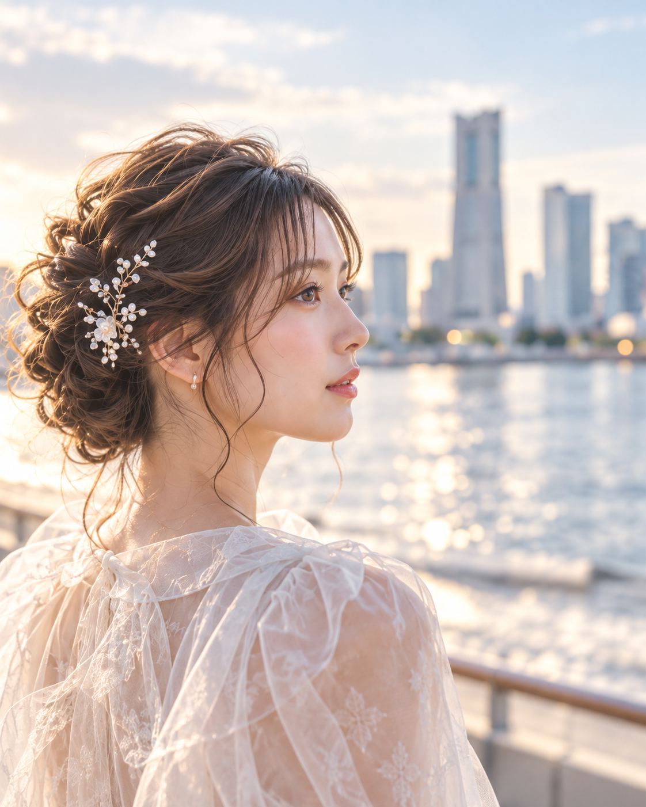
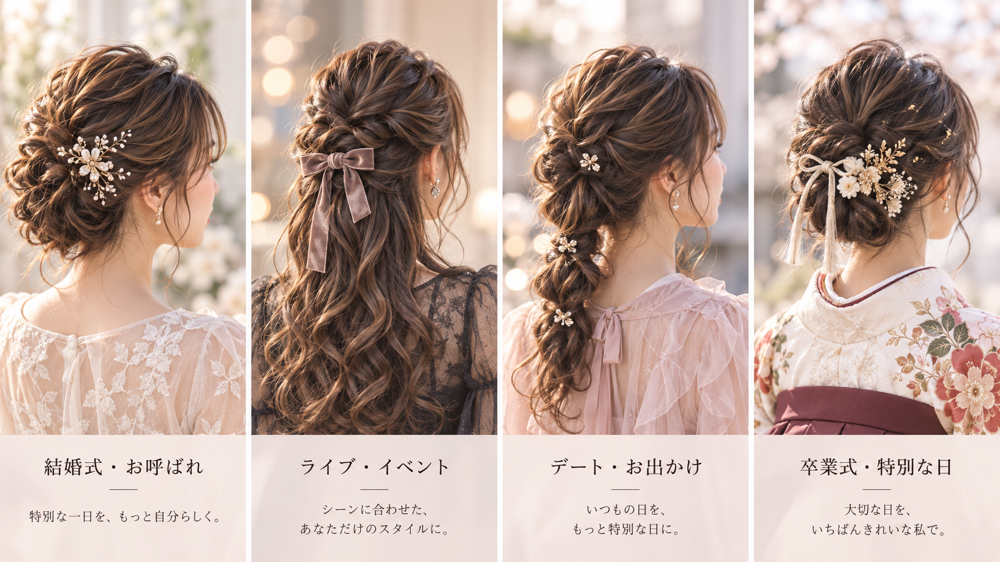
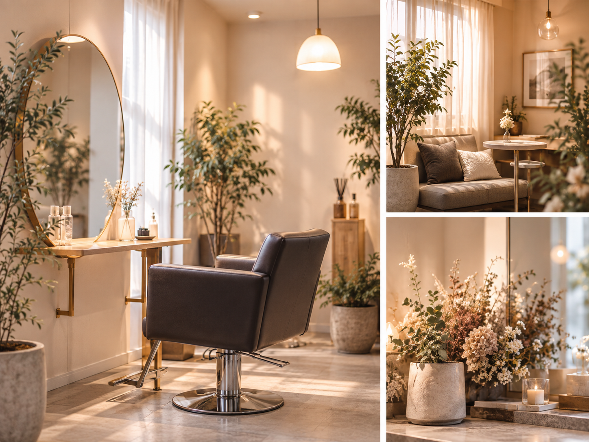
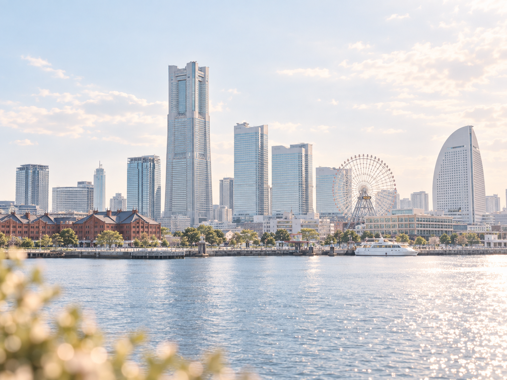

EARLY MORNING早朝対応OK
SCENE FITシーンに合わせたスタイル
COUNSELING丁寧なカウンセリング
※掲載ビジュアルはイメージです。
WHY / 選ばれる理由
予定が早い日ほど、
準備は軽やかに。
特別な日の朝は、準備をうまく整えられるかどうかで一日の動きやすさも変わります。Asureは、横浜でヘアセットから一日を始めたい方に寄り添うサロンです。
CONSULTATION
シーンに合わせた、
あなただけのスタイルに。
結婚式・お呼ばれ・ライブ・イベント。目的が違えば「似合う」も変わります。口コミから読み取れるのは、特別な日の支度において、時間の合わせやすさと気分が整う仕上がりが求められているということ。Asureは、その日の予定に合うヘアセットを提案できるサロンとしてLPを設計しています。
- 結婚式
- お呼ばれ
- ライブ
- イベント
- デート
- 卒業式
STYLE / SERVICE
ヘアセットを中心に、
特別な日の準備をサポート。
ヘアセット
大切な日の印象を整える、主役のメニュー。
シーン提案
服装や予定に合わせた雰囲気づくりへ。
通常メニュー
カット・カラーなど通常の美容メニューにも対応。
予約導線
予定に合わせて、事前相談・問い合わせへつなぎやすく。
VISUAL PROOF / GALLERY
シーンに合わせた、
あなたらしいヘアに。

※人物・髪型ビジュアルはAI生成のイメージです。実際の施術例・お客様写真ではありません。
CUSTOMER VOICE
特別な日の支度を、
気持ちよく始めたい人へ。
「朝の予定でも、慌ただしくなりすぎず支度しやすい。」
「イベントに向かう前の気分まで整うようなヘアセットが嬉しい。」
「その日の服や雰囲気に合わせて、きれいに仕上げたい。」
※口コミの傾向をもとに、Customer Valueとして再構成した表現です。数値や件数はLPには直接掲載していません。
SALON ATMOSPHERE
落ち着いたプライベート空間で、
ゆったりとした時間を。

大きすぎないサロンだからこそ、一人ひとりに丁寧に向き合うような空気感を大切に。支度の時間そのものが、特別な日の気持ちを整える時間になるよう設計しています。
※サロン空間ビジュアルはAI生成のイメージです。実際の店内写真ではありません。
STORE / ACCESS
横浜で、
予定につながりやすい立地。

- Salon
- Asure（アシュア）
- Area
- 横浜・南幸エリア
- Access
- 横浜駅徒歩圏で、予定先へつなぎやすい立地感
- Scene
- 結婚式 / お呼ばれ / ライブ / イベント / デート / 卒業式
FINAL CTA
その日の予定に合わせて、
まずは相談してみる。
ヘアセットから始まる特別な一日を、横浜で。
Asure
YOKOHAMA HAIR SALON